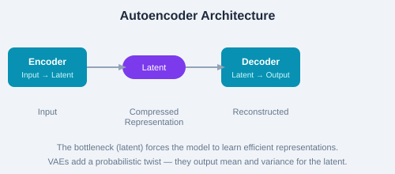

Autoencoders
An autoencoder is a neural network that learns to copy its input to its output through a bottleneck (latent space). It consists of an encoder that compresses input to a latent representation and a decoder that reconstructs the input from the latent.

Figure: Autoencoder — input is compressed to latent, then reconstructed.
import torch.nn as nn
class Autoencoder(nn.Module):
def __init__(self, input_dim=784, latent_dim=32):
super().__init__()
self.encoder = nn.Sequential(
nn.Linear(input_dim, 128),
nn.ReLU(),
nn.Linear(128, latent_dim)
)
self.decoder = nn.Sequential(
nn.Linear(latent_dim, 128),
nn.ReLU(),
nn.Linear(128, input_dim),
nn.Sigmoid()
)
def forward(self, x):
latent = self.encoder(x)
return self.decoder(latent)
# Loss: reconstruction error (MSE or binary cross-entropy)VAEs add a probabilistic twist — instead of encoding to a single point, the encoder outputs parameters (μ, σ) of a Gaussian distribution. The decoder samples from this distribution during training. This regularizes the latent space and enables true generation.
The VAE loss has two terms:
def vae_loss(recon_x, x, μ, logvar):
recon = binary_cross_entropy(recon_x, x, reduction='sum')
kl = -0.5 * sum(1 + logvar - μ.pow(2) - logvar.exp())
return recon + kl
# β-VAE: adds weight β on KL term for better disentanglement
# return recon + β * kl